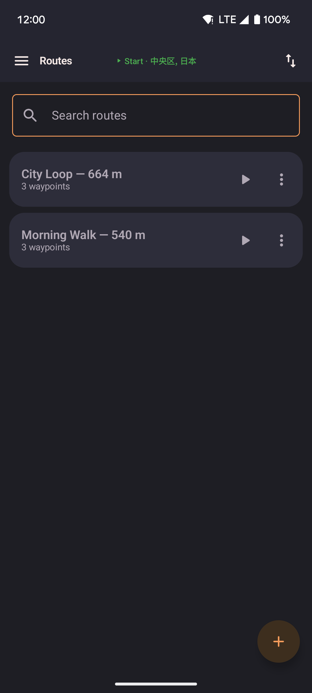
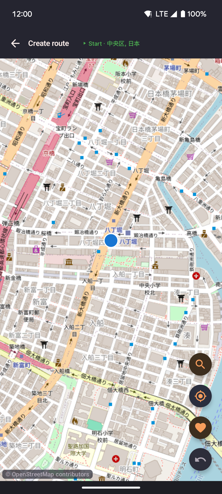
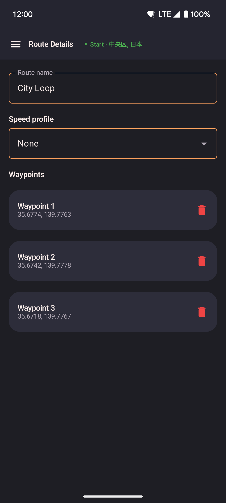

Routes
Create a series of waypoints on the map and replay them at your chosen speed. Routes can follow straight lines between waypoints or snap to real roads using OSRM routing.

- Tap the add button to create a new route by placing waypoints on the map or by importing a file.
- Tap a saved route to start it; options include loop, reverse, and return-to-start.
- Import routes from GPX files, GPS Joystick, or YAMLA via the overflow menu.
Route creator
Place waypoints by tapping the map. The route previews as a polyline as you add points.

- Search for a location by name using the search FAB to jump the map to a specific place.
- Undo the last waypoint with the undo button.
- Choose between straight-line and road-following (OSRM) before saving.
Route detail
Edit an existing route: rename it, reorder or delete individual waypoints, change the route type.

- Drag waypoints in the list to reorder them.
- Tap a waypoint to highlight it on the embedded map.
- Delete the route permanently from the action bar.